Guide de paramétrage (premiers pas)
La séquence de paramétrage à suivre dès la première connexion. En cours de mise à jour
Bienvenue dans Anim'Gest, et bravo pour cette première connexion. Ce guide vous accompagne pas à pas dans le paramétrage de votre logiciel, dans l'ordre le plus simple à suivre. Prenez le parcours essentiel pour être opérationnel rapidement : métier, coordonnées, intervenant, types de séance, espèces, catégories, catalogue, puis votre premier client, un animal et une formule. Les configurations avancées (charte, documents, e-mails, signature, etc.) pourront attendre le jour où vous en aurez besoin : rien ne presse. La checklist affichée en haut de l'application coche chaque étape dès qu'elle est faite, et ce guide reste toujours à portée de clic grâce au lien « Guide de paramétrage » en bas à gauche. Vous n'êtes jamais seul face à votre écran.
- 1. Votre métier
- 2. Vos coordonnées d'entreprise
- 3. Au moins un intervenant
- 4. Vos types de séance
- 5. Espèces et races
- 6. Vos catégories d'articles
- 7. Votre catalogue d'articles
- 8. Votre premier client
- 9. Un animal
- 10. Une formule
- 11. Déroulez un cycle complet
Parcours essentiel
Ces étapes se suivent dans l'ordre : chacune prépare la suivante. Comptez une petite heure en tout, que vous pouvez très bien fractionner en plusieurs fois. À la fin, votre logiciel saura tout ce qu'il faut pour éditer un devis, planifier une séance et facturer sereinement.
1Votre métier
Commencez par déclarer votre métier, ou vos métiers si vous en exercez plusieurs (éducateur, toiletteur, éleveur, pension, médiation...). C'est le choix le plus structurant de tout le paramétrage : il adapte le vocabulaire et les modules affichés dans votre menu, pour que le logiciel parle exactement votre langage et ne vous présente que ce qui vous sert vraiment. Tout le reste du paramétrage vient ensuite se poser sur ce socle, et c'est pour cela que cette étape ouvre la marche. Prenez un instant pour cocher chaque activité réellement pratiquée : c'est ici que se règle la personnalisation de fond de votre espace.
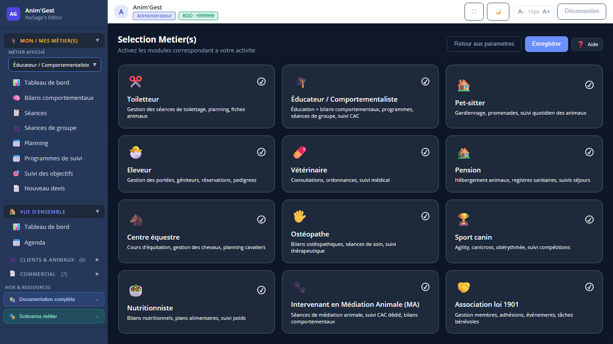
2Vos coordonnées d'entreprise
Renseignez votre raison sociale, votre adresse, votre moyen de contact et vos identifiants légaux (SIRET, TVA). Ces informations sont reprises telles quelles en tête de vos devis et de vos factures : les poser dès maintenant vous évite d'éditer des documents incomplets, puis de devoir les refaire. C'est aussi ce qui donne à vos éditions un aspect professionnel et rassurant pour vos clients. Comptez deux minutes, une seule fois, et le sujet est réglé pour de bon.
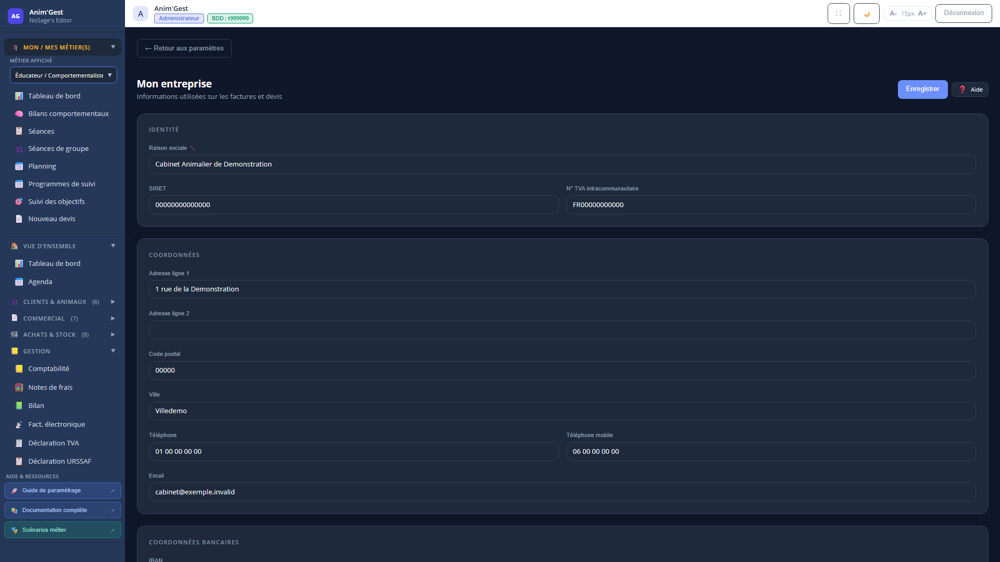
3Au moins un intervenant
Ajoutez la personne qui réalise les prestations, avec sa couleur d'agenda et ses disponibilités. Au démarrage, c'est bien souvent vous. Sans au moins un intervenant, l'agenda et l'affectation des séances ne peuvent pas fonctionner : c'est la brique qui fait vivre votre planning. La couleur que vous choisissez vous permettra de repérer d'un coup d'oeil qui fait quoi, un confort précieux le jour où votre équipe s'agrandira.
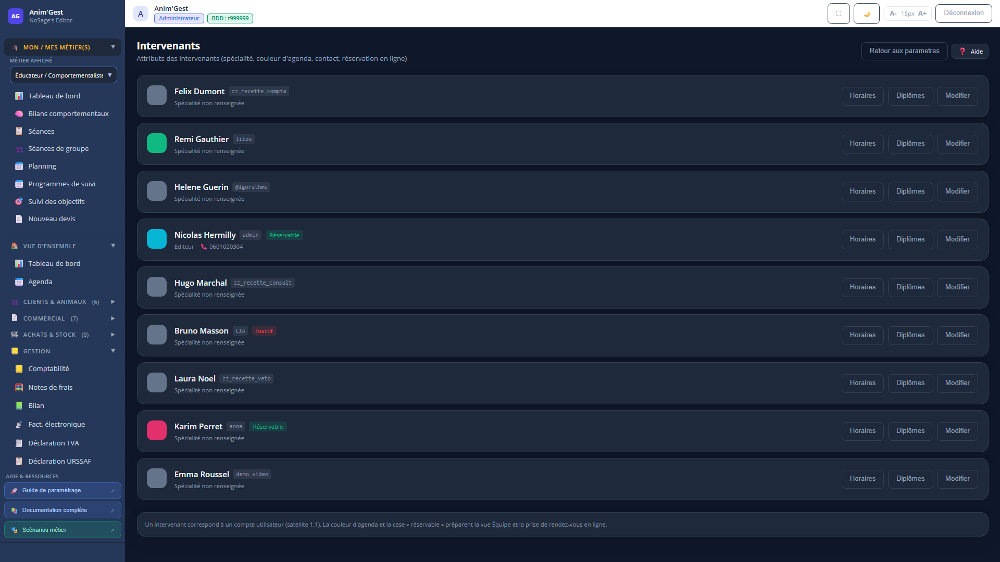
4Vos types de séance
Définissez les prestations que vous proposez, chacune avec sa durée, sa couleur et sa catégorie de séance (un cours collectif, un bilan comportemental, une nuit de pension...). Ces types alimentent directement la prise de rendez-vous et l'agenda : bien réglés, ils vous font gagner un temps précieux, car un rendez-vous se pose alors en deux clics. La durée sert au calage automatique des créneaux, et la couleur au repérage visuel sur votre planning.
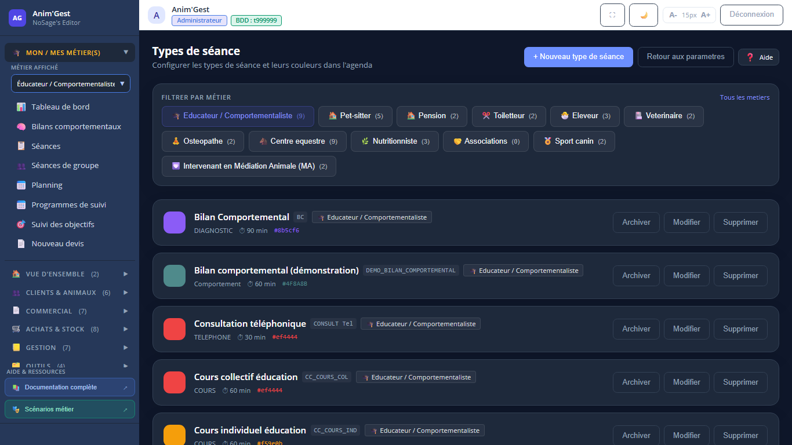
5Espèces et races
Vérifiez le référentiel des espèces et races (canin, félin, équin, NAC...). Il alimente toutes vos fiches animaux et conditionne certains écrans métier, comme l'élevage ou la pension. En clair, c'est le socle qui vous permettra ensuite de rattacher chaque animal à la bonne espèce, puis à la bonne race. (Rappel : l'espèce se paramètre avant l'animal.) Un référentiel propre, ce sont des statistiques justes et des documents cohérents pour la suite.
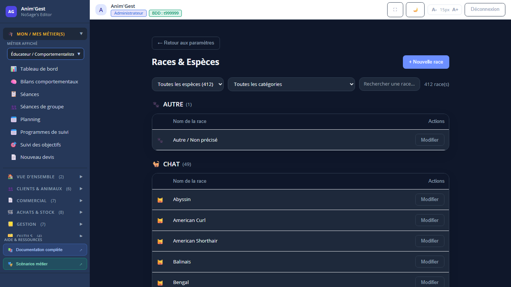
6Vos catégories d'articles
Créez les catégories qui rangent vos articles et portent le compte de vente utilisé en facturation. C'est une étape un peu technique, mais courte, et elle rend un vrai service à votre comptabilité : chaque vente se retrouve automatiquement dans la bonne rubrique. (Une catégorie est un prérequis de l'article : elle se paramètre avant le catalogue.) Voyez-les comme les tiroirs d'un meuble : on les prépare avant d'y ranger quoi que ce soit.
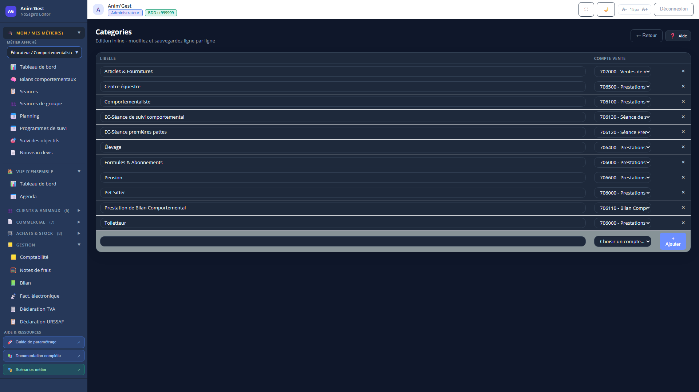
7Votre catalogue d'articles
Ajoutez vos articles et prestations avec leur prix et leur taux de TVA. C'est le coeur de votre facturation : une fois le catalogue en place, un devis ou une facture se monte en quelques clics, sans jamais ressaisir un montant. Chaque article se relie à l'une des catégories créées à l'étape précédente. Le temps que vous investissez ici une seule fois, vous le regagnez à chaque document édité.
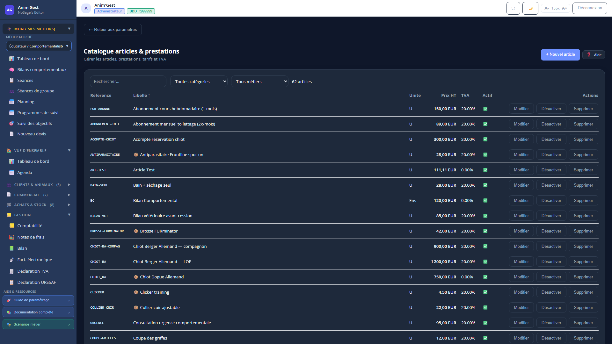
8Votre premier client
Créez une fiche client avec ses coordonnées et ses moyens de contact. C'est le point de départ concret de votre activité dans le logiciel : de cette fiche naissent les devis, les rendez-vous et la facturation. Savourez cette première création : c'est le signe que votre paramétrage prend vie. Rien de plus simple : un nom, un téléphone, un e-mail, et vous voilà parti.
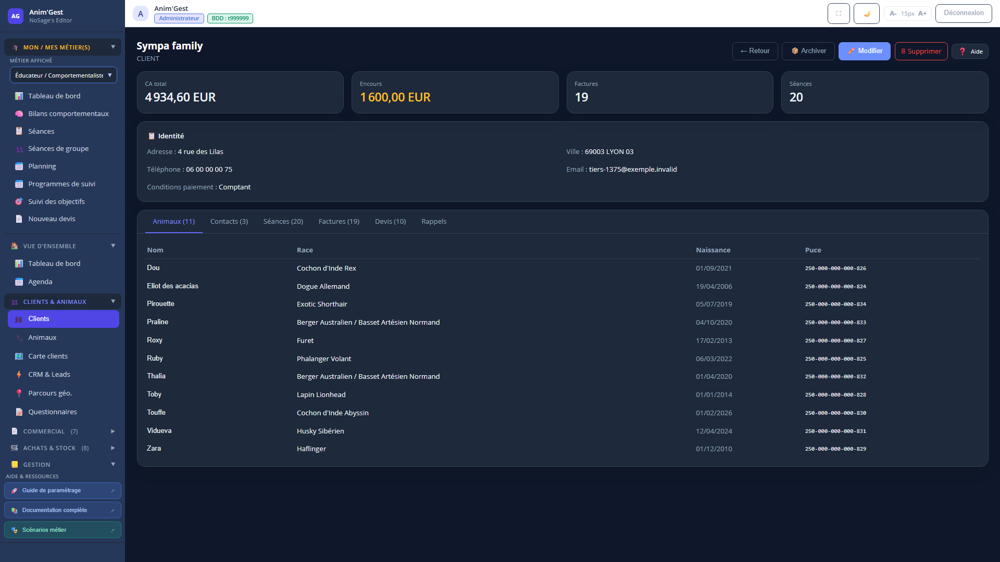
9Un animal
Rattachez un animal à votre client : son espèce, sa race et sa date de naissance. La fiche animal est le journal de bord de vos prestations : elle porte le suivi, le carnet de santé et tout l'historique. C'est ce lien entre le client et son compagnon qui donne toute sa richesse à votre logiciel. Vous verrez : au fil des séances, cette fiche devient une véritable mémoire du travail accompli.
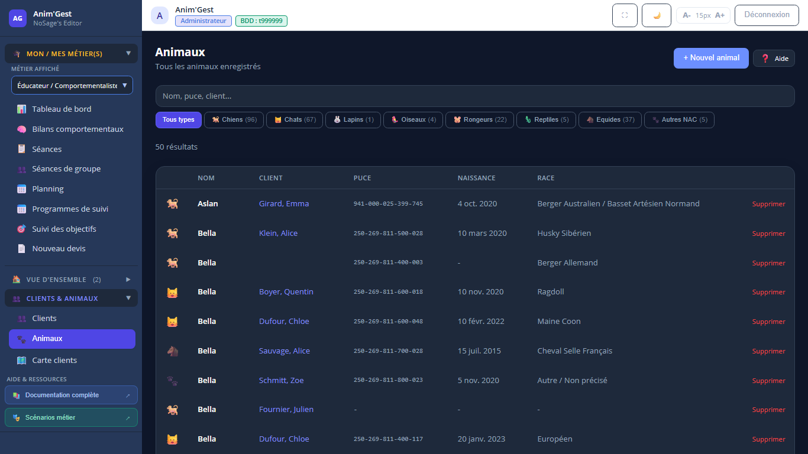
10Une formule
Si vous vendez des offres groupées, créez une formule : un pack de séances, un abonnement ou un carnet. Elle assemble plusieurs de vos articles en une seule offre, dont le décompte se fait ensuite automatiquement à chaque séance consommée. C'est un vrai atout commercial : vos clients s'engagent, et vous n'avez plus à compter les séances à la main. Cette étape est facultative : passez-la sans crainte si les formules ne font pas partie de votre offre.
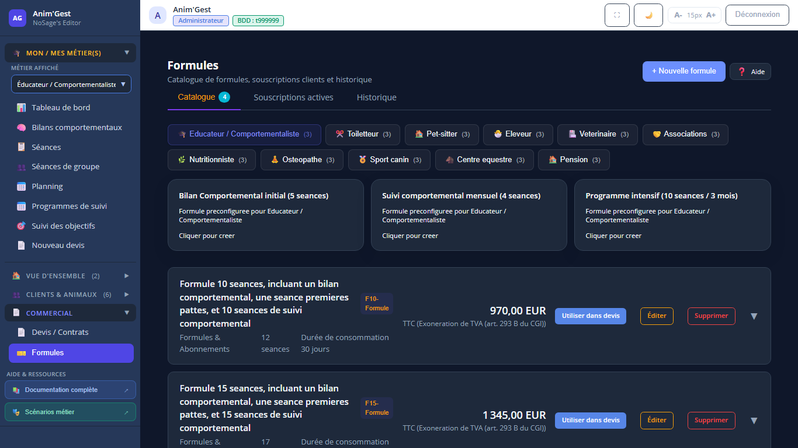
11Déroulez un cycle complet
Pour finir en confiance, enchaînez une fois le cycle de bout en bout : devis, séance, facture, règlement. Cet essai grandeur nature vous prouve que tout votre paramétrage tient ensemble, et vous familiarise avec les gestes que vous répéterez chaque semaine. C'est le meilleur moyen de partir l'esprit tranquille. Ensuite, le tableau de bord prend le relais et suit votre activité à votre place.
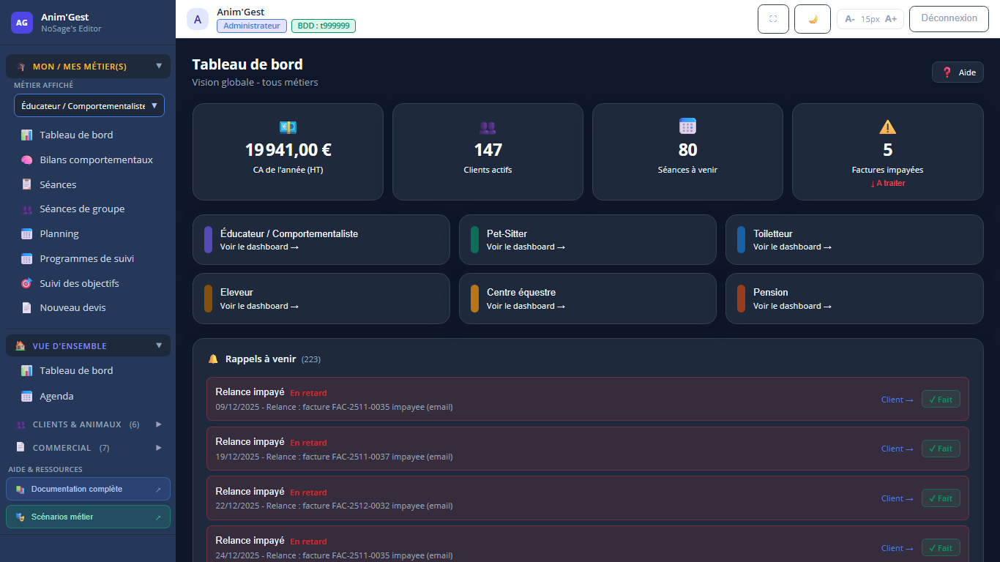
Configurations avancées
Ces réglages ne bloquent en rien votre démarrage : ils enrichissent le logiciel au fil de votre progression. Ouvrez-les quand vous en aurez besoin, un par un, à votre rythme. Chacun est indépendant des autres, alors avancez sans pression.
•Charte graphique
Votre logo, vos couleurs et la police de vos documents. À soigner avant d'envoyer vos premiers PDF : c'est votre image de marque qui parle à votre place.
Ouvrir l'écran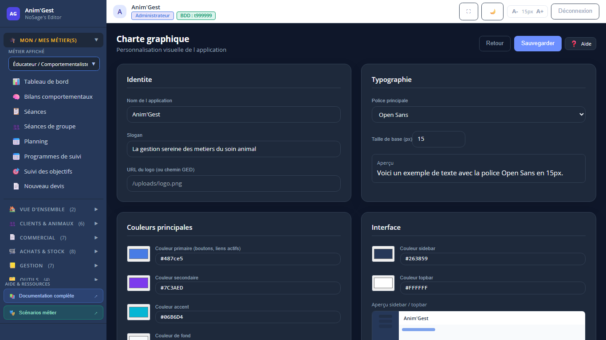
•Éditions et documents
La mise en page de vos devis, factures et attestations (en-têtes, pieds de page, mentions). De quoi donner à chaque document l'allure exacte que vous souhaitez.
Ouvrir l'écran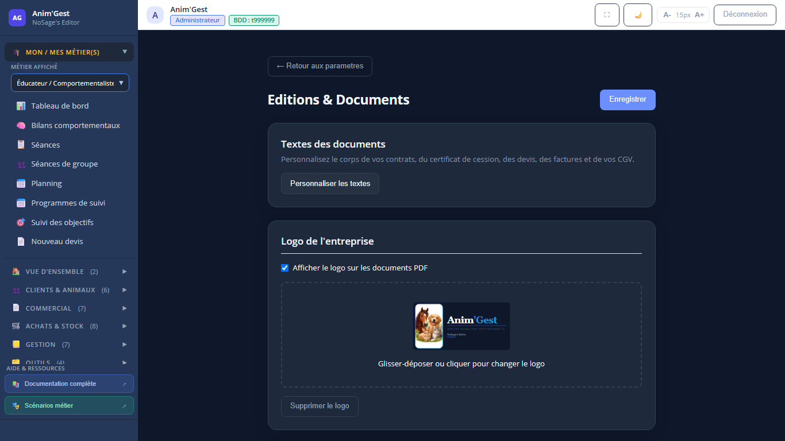
•Textes des documents
Vos conditions générales, mentions légales et textes récurrents, insérés automatiquement dans vos éditions. Vous les écrivez une fois, ils vous suivent partout.
Ouvrir l'écran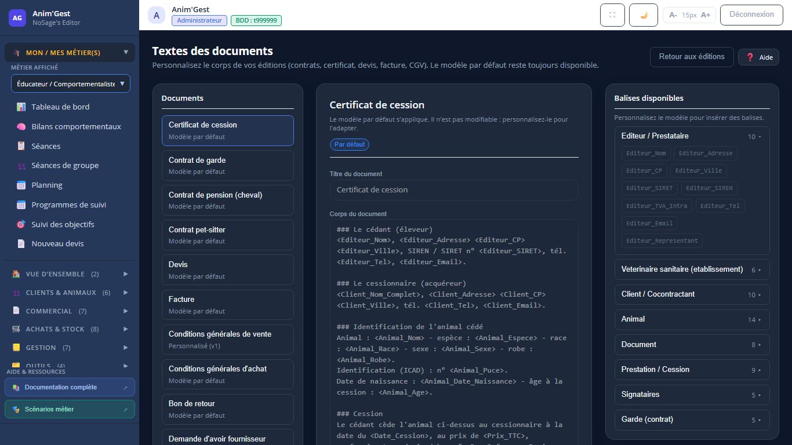
•Documents (GED)
Le rangement et le partage de vos pièces jointes (contrats, justificatifs), classées par client et par dossier. Fini les documents éparpillés : tout est à sa place et retrouvable en un instant.
Ouvrir l'écran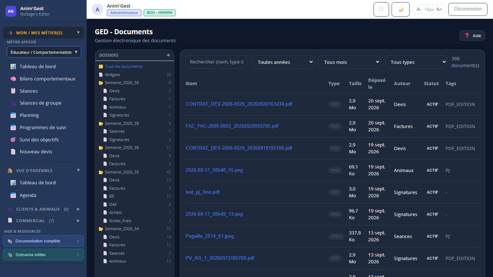
•E-mails (SMTP)
L'envoi de vos documents par e-mail depuis votre propre adresse. À configurer avant vos premières relances, pour que vos messages arrivent bien à vos couleurs.
Ouvrir l'écran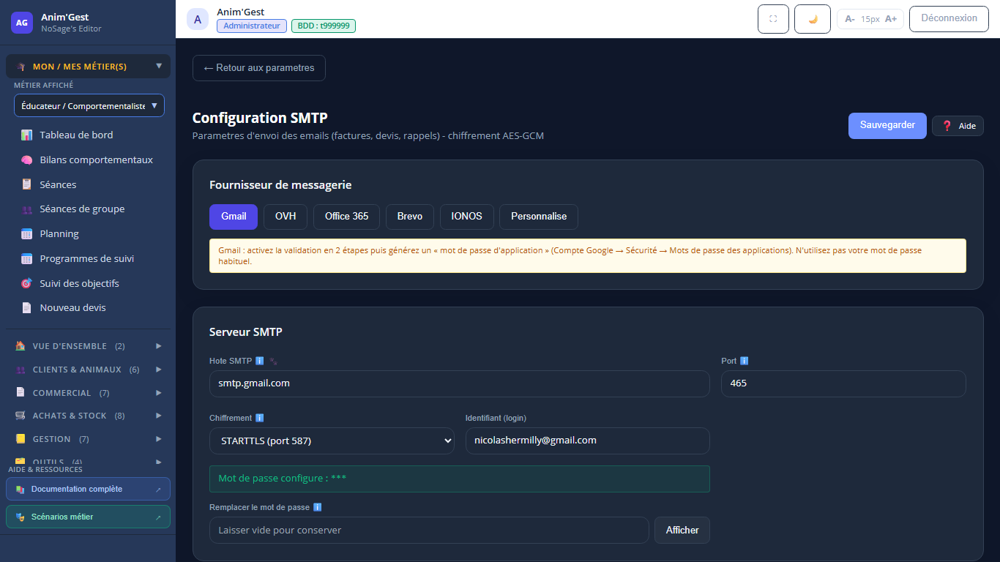
•SMS
Les rappels de rendez-vous et notifications par SMS (fournisseur, expéditeur). Un rappel bien placé, c'est un rendez-vous honoré et un client content.
Ouvrir l'écran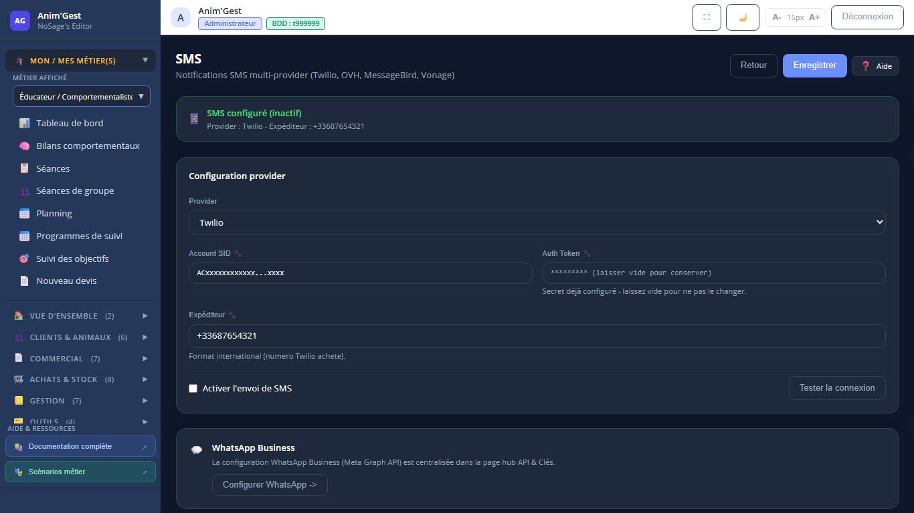
•Portail client
L'espace en ligne où vos clients consultent leurs documents et règlent en ligne. Un vrai plus qui vous fait gagner du temps et valorise votre sérieux.
Ouvrir l'écran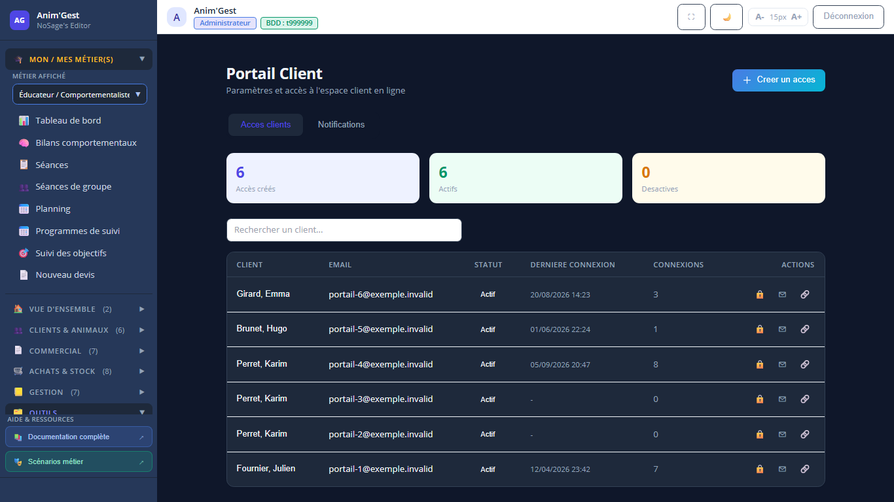
•Prise de rendez-vous (Calendly)
La réservation en ligne de créneaux par vos clients, synchronisée à votre agenda. Vos disponibilités se remplissent même quand vous n'êtes pas au bureau.
Ouvrir l'écran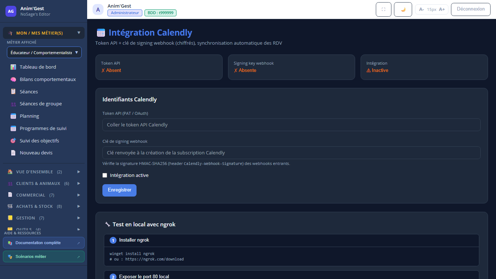
•Signature électronique
La signature à distance de vos devis et contrats, avec valeur probante. Vos accords se concluent plus vite, sans échange de papier.
Ouvrir l'écran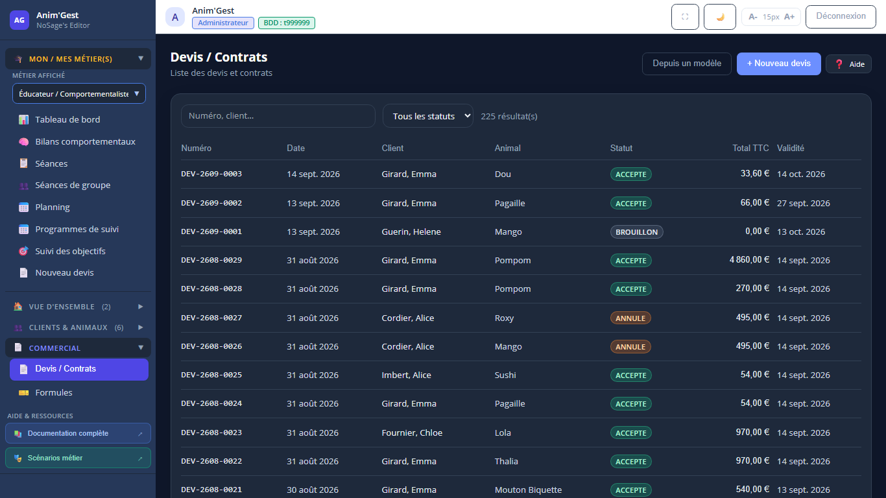
•Assistant IA (Eliot)
L'avatar et le comportement d'Eliot, l'assistant qui vous aide à créer devis et documents. Un coup de main toujours disponible, réglé à votre goût.
Ouvrir l'écran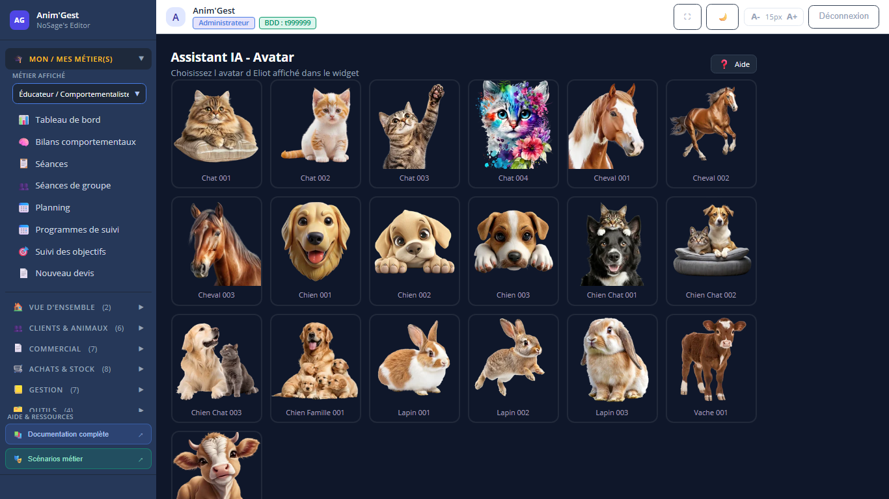
•Utilisateurs et rôles
L'ajout de vos collaborateurs et l'attribution de leurs droits d'accès par rôle. Chacun voit ce dont il a besoin, et vous gardez la main sur l'ensemble.
Ouvrir l'écran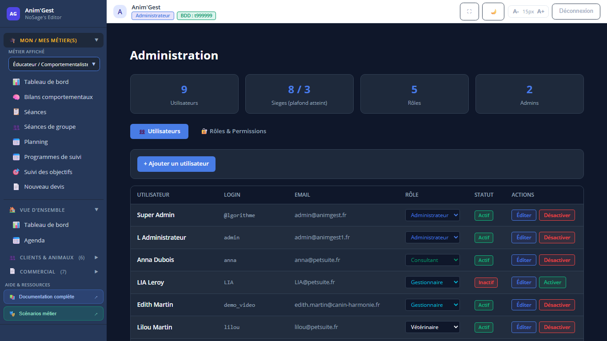
Votre logiciel est prêt
Bravo : en suivant ces étapes, vous avez posé toutes les fondations de votre logiciel. Vous pouvez dès à présent accueillir vos clients, planifier vos séances et éditer vos documents en toute confiance. Les configurations avancées (charte, e-mails, signature...) restent disponibles à tout moment, à activer le jour où vous en ressentez le besoin. Et si une question surgit en chemin, ce guide reste toujours accessible en bas à gauche : vous avancez à votre rythme, jamais seul.